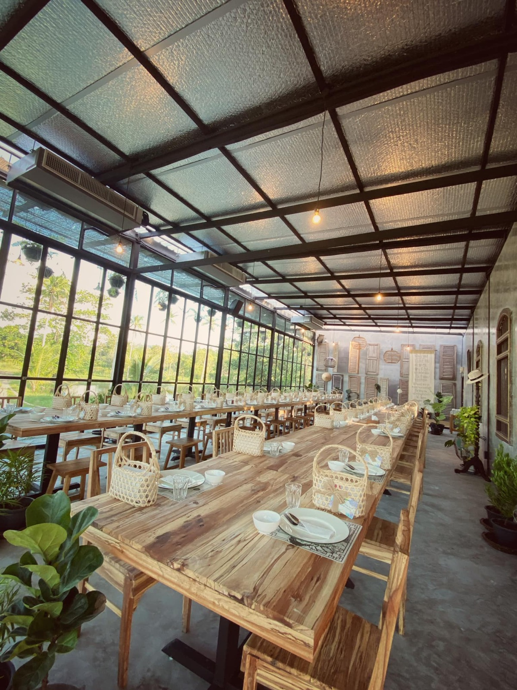
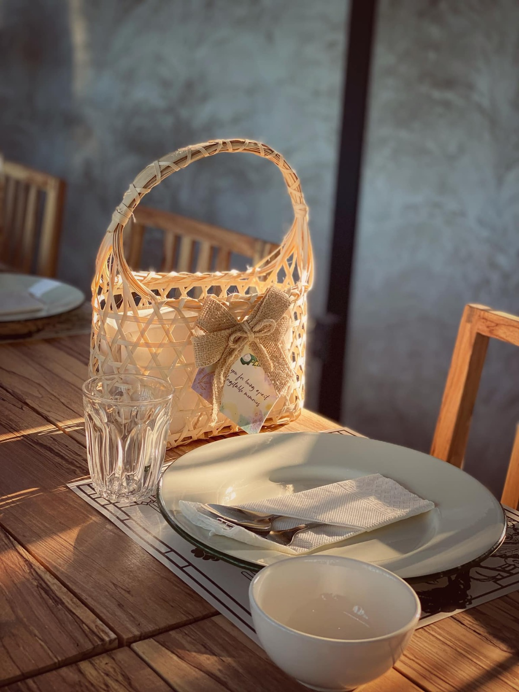
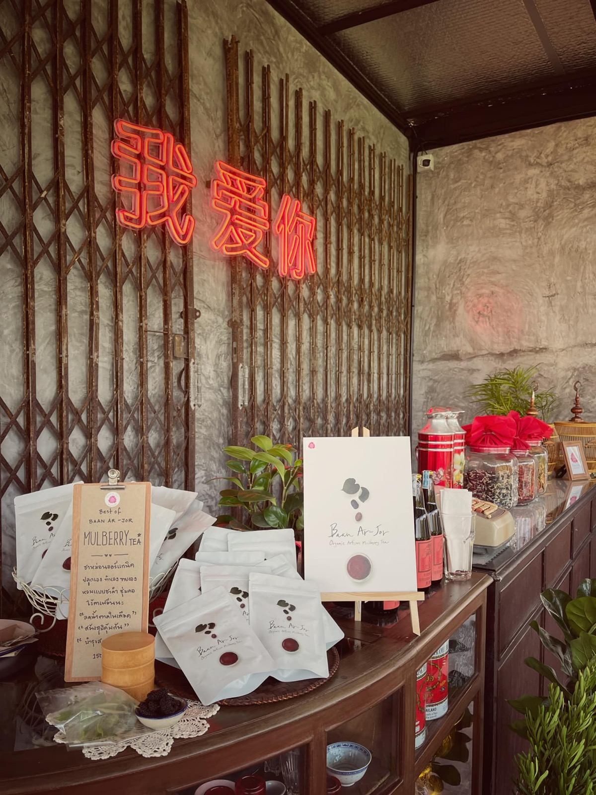

2564 · สื่อ · เหตุการณ์
หว่ออ้ายหนี่ครบ 1 เดือน รับงานเลี้ยงหลากรูปแบบ



ชีวิตเริ่มใหม่ทุกวัน 💪🔥
วันนี้ครบรอบเปิด #หว่ออ้ายหนี่ ครบ 1 เดือน รับงานสารพัดรูปแบบ เวทีเสวนา exhibition สินค้าเกษตร ไปถึงงานโชว์รถยนต์ งานต้อนรับผู้ใหญ่ ต้อนรับเอเจ้นท์ กลุ่มจัดเลี้ยงทั้งไทยทั้งเทศ และยังเป็นที่นั่งทานข้าวในวันที่ลูกค้าล้นจากโต๊ะแดง 🔴
ทุกๆครั้งที่จัดงานใหญ่ขึ้น ความท้าทายมากขึ้น จานชามของใช้ ของประดับ พร้อพในร้านเพิ่มขึ้น ร้านสถานที่สวยขึ้นส่วนตัวนอนหลับบ้างไม่หลับบ้าง กลัวงานออกมาไม่ดี เรียกได้ว่า แอบ #เก็กซิ้ม ทุกวัน แต่เชื่อทีมงานพร้อมพัฒนา ท้ายที่สุดทีมนี้จะพาบ้านหลังนี้รอดให้ได้ 💪🔥
ตอนนี้บ้านอาจ้อต้องการงานและเงินหนักมาก ใครจะมีงานจัดเลี้ยง ขนาดไม่เกิน 60 ที่นั่ง ต้องการสถานที่ฟินๆ บรรยากาศสนามหญ้าริมน้ำ มีลมหนาวโชยๆ เครื่องเสียงเบสหนักๆ ติดต่อมาได้ทุกช่องทางนะคับ ทีมงานพร้อมมม 😊❤️
ขอบคุณอาจ้อให้พรวันงานอากาศดีตลอด 😇
ขอบคุณจี้ที่ด่าจนรอด 🥰
ขอบคุณมะแลงานทุกกระเบียด 💕
ขอบคุณโอ๊กทำทุกสิ่งให้ทุกอย่างใช้ได้ 🎉
ขอบคุณทีมงานทุกคน ที่ยอมรับ และพัฒนา 💪
ขอบคุณอดีตลูกค้าที่มาช่วยงานในทุกรูปแบบ 😓
ขอบคุณตัวเองที่ยังนอนหลับ 😅
#หว่ออ้ายหนี่ 📌
#บ้านอาจ้อ ❤️